第一章火
高雄前鎮的那場火，是在二〇一九年十一月十四日凌晨兩點十七分被通報的。
打一一九的是對面麵攤的老闆，他收攤收到一半，抬頭看到那棟三層樓的老房子二樓窗戶冒出黑煙。他說他喊了幾聲，沒有人回應，然後火光就從窗戶裡竄出來了，「像有人在裡面點了一整箱鞭炮」。
消防隊七分鐘後到達。火勢那時候已經燒到三樓，整棟房子的正面像一張被烤焦的臉。他們從後面的防火巷進去，救出三樓一個外送員，二樓一對老夫妻——太太扶著癱瘓的先生，已經在樓梯間裡快要窒息了。一樓沒有人。
火在凌晨三點四十分撲滅。
天亮以後，消防隊在一樓的最裡面找到了一具屍體。趴著的，臉朝下，離後門大約三公尺。經過辨認，是這棟房子的屋主，賴文龍，六十八歲，大家叫他老賴。
那棟房子原本是一間印刷廠。一九八〇年代老賴的父親開的，做名片、喜帖、廣告單，生意好的時候有十幾個師傅。二〇〇〇年以後生意越來越差，老賴把二樓三樓隔成套房出租，一樓留著幾台老印刷機，偶爾接一點小單。
火災之後，警方初步判斷：一樓印刷機房電線走火，火勢沿著樓梯往上竄。老賴當時可能在一樓處理什麼事情，被濃煙嗆倒，沒有逃出來。
意外。結案。
除了一件事。
那棟房子在火災前一個月，投保了一份火災險。保額三千萬。
第二章火調員
沈羽是高雄市消防局的火災調查員。
三十八歲，做了十二年。她不是警察，不辦案，不抓人。她的工作是看火——看火從哪裡開始，往哪裡走，燒了什麼，留下什麼。她的報告會決定一場火是意外還是人為，會決定保險公司賠不賠，會決定有沒有人要被起訴。可是她自己從來不決定什麼。她只看。
她是在火災後的第三天接到這個案子的。不是因為警方懷疑什麼，是因為保險公司要求「獨立火調報告」，這是三千萬保額的標準程序。
她到現場的時候，是下午兩點。房子已經被封鎖線圍起來，正面的牆黑了一片，窗戶全破，三樓的鐵皮屋頂塌了一半。空氣裡還有那種味道——燒過的木頭、燒過的塑膠、燒過的紙。印刷廠的紙。
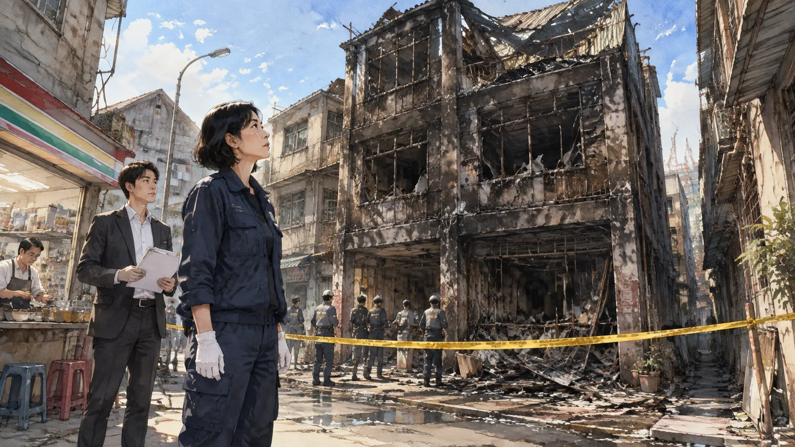
跟她一起來的是一個年輕的刑警，郭子安，二十九歲，分局派來「協助」的。他手裡拿著一疊筆錄，一邊走一邊翻。
「沈姐，警方這邊已經問過六個證人了。」他說，「筆錄都在這裡。基本上——」
「基本上什麼？」
「基本上每個人說的都不一樣。」郭子安把筆錄遞給她，「時間對不上，地點對不上，連火從哪裡開始都對不上。我們隊長說，這種案子就是這樣，深夜、緊張、每個人記的都是自己以為的。」
沈羽接過筆錄，沒有看。她站在房子前面，看著那片黑牆。
「小郭，」她說，「火不會說謊。人會。可是人說的謊，通常也是一種真話。」
「什麼意思？」
「意思是，」沈羽戴上手套，走進封鎖線，「一個人說謊的地方，就是他最在乎的地方。你把六個人最在乎的地方連起來，就是那天晚上真正發生的事。」
她走進那棟房子。
第三章第一位與第二位
第一位證人，便利商店店員，姓吳，二十三歲，大家叫他小凡。
便利商店在房子斜對面，隔一條馬路。小凡那天值大夜班，凌晨兩點十分左右，他說他看到一個穿紅色外套的男人從那棟房子走出來。
「他從正門出來，往左走，走得很快。」小凡在筆錄裡說，「戴著帽子，看不到臉。大概一米七，瘦瘦的。」
「你確定是兩點十分？」
「差不多。我剛好在補菸，補菸都是兩點左右。」
「他手上有拿東西嗎？」
「好像沒有。或者有，我沒注意。」
沈羽把這份筆錄讀了兩次。然後她去了便利商店。
小凡不在，值班的是另一個店員。沈羽站在店裡，站在補菸的位置——收銀台後面，菸櫃在牆上，補菸的時候人要背對門口。她轉過身，從菸櫃的位置往外看。玻璃門，馬路，對面那棟燒黑的房子。可以看到正門。可是要看清楚一個人是「瘦瘦的」，是「戴帽子」的，在凌晨兩點，隔著一條馬路——
她問店員：「你們的監視器，有拍到外面嗎？」
「有一台對著門口，可是只拍得到門口前面兩公尺。」
「那天晚上的畫面，警方調了嗎？」
「調了，說沒有拍到什麼。」
沈羽走出便利商店，站在路邊，看著對面的房子。她想，小凡看到了一個人，這件事大概是真的。可是「紅色外套」、「戴帽子」、「瘦瘦的」——這些是他看到的，還是他事後想出來的？
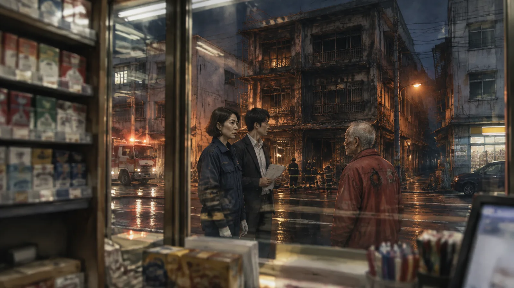
人在說「我看到一個人」的時候，通常是真的看到了。人在描述那個人的時候，通常是在描述自己心裡的一個人。
✦
第二位證人，三樓房客，姓劉，三十一歲，外送員，大家叫他阿德。
他是被消防隊從三樓救出來的，吸入性嗆傷，住院兩天。他的筆錄是在醫院做的。
「一點五十分左右，我聞到瓦斯味。」阿德說，「很淡，可是我對這個很敏感，我以前在瓦斯行做過。我下樓去看，走到一樓的時候味道比較重，我敲老賴的門——他住一樓後面的房間——敲了幾下，沒有人應。我以為他睡了，就回去了。」
「你沒有想過要打電話？」
「我想過。可是味道真的很淡，我怕是我多心。而且老賴這個人……」
「怎麼樣？」
「他不喜歡人管他的事。我上次跟他說一樓電線太舊，他叫我不要多管閒事。」
「一點五十分，你確定？」
「我看了手機。一點四十八分。我記得很清楚，因為我還在想要不要再叫一單。」
沈羽把這份筆錄放在便利商店店員的旁邊。
一點四十八分，一樓有瓦斯味。兩點十分，一個穿紅色外套的人從正門走出來。兩點十七分，火災通報。
如果阿德說的是真的，那火災之前二十九分鐘，一樓已經有瓦斯外洩。如果小凡說的是真的，那火災前七分鐘，有一個人離開了房子。
這兩件事，加起來像什麼，郭子安已經在筆錄旁邊寫了：縱火？
沈羽沒有寫。她走進一樓的印刷機房。
第四章第三位與第四位
第三位證人，二樓房客，陳太太，六十二歲。
她和癱瘓的先生住在二樓靠前面的套房，住了七年。她的先生五年前中風，之後就沒有下過床，她一個人照顧。她的筆錄很長，郭子安說她講了一個小時，講到後來在哭。
「一點半，老賴來敲門。」陳太太說，「他說要收房租。我說房租不是月底才收嗎，他說這個月提前。我說我還沒領到補助，他說沒關係，先不用給。」
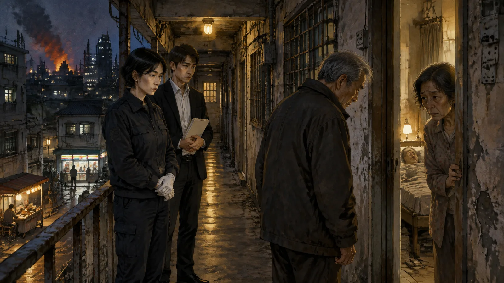
「先不用給？」
「對，他說先不用給。然後他說，妳今天晚上帶妳先生去妳女兒那裡住好不好。我說為什麼，他說房子要整修。我說現在是半夜。他說我知道，可是明天一早工人就來了，會很吵。」
「妳怎麼說？」
「我說我先生不能動，要搬他要叫救護車，半夜怎麼叫。他就沒有再說了。可是他一直站在門口，站了很久，好像在想什麼。然後他說：那妳們今天晚上不要睡太熟。」
陳太太在筆錄裡說到這裡，哭了。
「他是不是知道會有火？」她問警察，「他是不是想叫我們走？」
郭子安在筆錄旁邊寫：屋主事先知情？
沈羽讀完，把筆錄放在前兩份旁邊。她在三樓塌掉的屋頂下面站了很久。
一個六十八歲的男人，凌晨一點半，去敲一個照顧癱瘓丈夫的房客的門，叫她帶先生去女兒家住。
他說：先不用給。他說：今天晚上不要睡太熟。
✦
第四位證人，對面的麵攤老闆，姓黃，五十五歲。
他是報案的人。他的筆錄最短，可是最奇怪。
「我看到二樓的窗戶冒煙，然後火從窗戶噴出來。」他說，「不是一樓，是二樓。一樓那時候還是黑的，什麼都沒有。火是從二樓開始的。」
「你確定？」
「我在那裡擺攤十五年，我對那棟房子熟得很。二樓左邊第二個窗戶，就是那個癱瘓的先生住的房間旁邊那一間。火是從那裡出來的。」
沈羽站在一樓的印刷機房裡，看著地板。
火調員看火，第一件事是看「起火點」。火燒過的地方會留下痕跡：燒得最久的地方最黑，最深，木頭會碳化成鱷魚皮一樣的紋路，越靠近起火點紋路越細。水泥地板會裂，越靠近起火點裂得越碎。金屬會變形，變形的方向會指向火的來源。
她在一樓找到了起火點。就在印刷機房的最裡面，靠近後門的那台老印刷機旁邊。地板裂得最碎，牆最黑，天花板的木樑碳化最深。火從這裡開始，往上燒，燒穿天花板，燒到二樓。
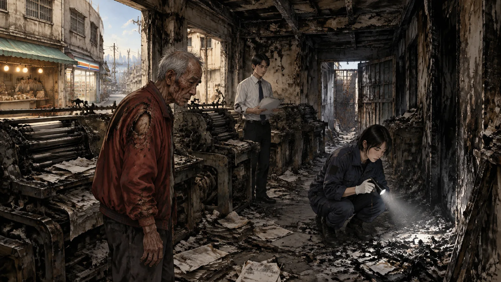
麵攤老闆說火從二樓開始。
他錯了。可是他錯得很具體——「二樓左邊第二個窗戶」。一個擺了十五年攤的人，對那棟房子的每一個窗戶都熟。他為什麼會看錯？
沈羽走出房子，走到麵攤的位置，站在那裡看那棟房子。
她看到了。從這個角度，一樓的窗戶被麵攤的招牌擋住了一半，而且一樓的窗戶是老式的木框窗，小，窄，加了鐵窗。二樓的窗戶大，沒有鐵窗。一樓起火以後，煙和火會先從一樓的小窗戶出來，可是從這個角度看不到。等火燒穿天花板，從二樓的大窗戶噴出來，麵攤老闆才看到。
所以他看到的是真的。只是他看到的，不是火的開始。
「沈姐，」郭子安站在她旁邊，「所以麵攤老闆的證詞可以排除？」
「不能排除。」沈羽說，「他說的是真的。他真的看到火從二樓出來。這件事告訴我們，火從一樓燒到二樓的時候，他還沒有看到一樓的火。這表示一樓的火燒得很快，很集中，沒有從窗戶大量冒煙——這種燒法，不像電線走火。」
「像什麼？」
「像有人倒了東西。」
第五章第五位：兒子
第五位證人，賴俊，三十六歲，老賴的獨子。
他不在現場。火災那天晚上他在左營的一間KTV，包廂裡有五個朋友，監視器有拍到他從十一點待到凌晨三點。不在場證明很完整。
可是他的筆錄，沈羽讀了三次。
「我爸的印刷廠早就不賺錢了。」賴俊說，「房租一個月收三萬多，一樓那些機器一年接不到十萬的單。他自己一個人住一樓後面，省吃儉用。我跟他說過很多次，把房子賣了，去住安養院，他不肯。」
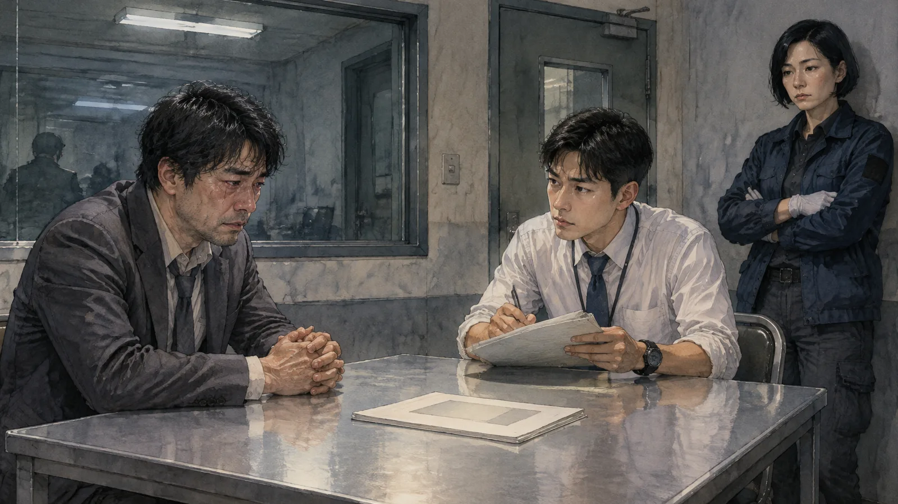
「火災險是誰投保的？」
「我。」賴俊說得很直接，「十月初，我幫他保的。我在保險公司工作，我知道那棟房子有多老，電線多危險。我保了三千萬，受益人寫我爸。他不知道，我沒有跟他說。」
「為什麼沒有跟他說？」
「他不會同意。他覺得保險是浪費錢。」
「你有欠債嗎？」
賴俊沉默了一下。
「有。」他說，「大概八百萬。投資失敗。可是這跟我爸沒有關係，我沒有跟他要過錢，他也不知道。」
郭子安在旁邊寫：動機。
沈羽把筆錄合上。她在想一件事：一個在保險公司工作的兒子，在父親不知情的情況下幫父親的房子保了三千萬的火災險，一個月後房子燒了，父親死了。這件事聽起來像一個很簡單的故事。
可是簡單的故事，通常有一個問題：太簡單了。
「小郭，」她說，「賴俊的筆錄裡，有一件事很奇怪。」
「他欠八百萬？」
「不是。」沈羽說，「他說『他不知道，我沒有跟他說』。」
「這有什麼奇怪？」
「因為老賴凌晨一點半去敲陳太太的門，叫她帶先生去女兒家住。」沈羽說，「如果老賴不知道有保險，他為什麼要清空房子？」
郭子安愣住了。
「所以老賴知道？」
「或者，」沈羽說，「老賴要清空房子的理由，跟保險沒有關係。」
第六章第六位：慢跑者
第六位證人是最後一個做筆錄的，因為她是自己來的。
火災後第二天，她走進分局，說她那天晚上有看到東西。姓林，三十四歲，住在附近，每天凌晨兩點去河堤慢跑，「因為那時候沒有人」。
「兩點零五分左右，我跑過那棟房子的後面，防火巷那邊。」她說，「我看到一個老人站在後門口。穿一件深色的外套，手裡拿著一個東西，好像是桶子。他看到我，好像嚇了一跳，往後退了一步。」
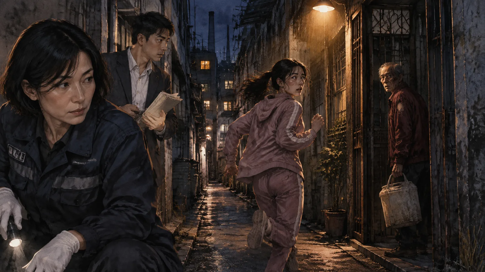
「妳看清楚他的臉了嗎？」
「路燈很暗，可是我常常跑那條路，我認得他。是那棟房子的屋主。我跟他打過幾次招呼，他每天早上會在後門抽菸。」
「妳確定是他？」
「確定。他有一個習慣，抽菸的時候會用左手，因為右手的食指少了一節。那天晚上他拿桶子也是用左手。」
沈羽把這份筆錄讀完，站起來，走到房子的後門。
防火巷很窄，大約一米二。後門是一扇鐵門，燒得變形了。門口的地上有一個很圓的、燒得特別黑的痕跡。她蹲下來看。塑膠桶燒過的痕跡。
兩點零五分，老賴站在後門口，左手拿著一個桶子。
兩點十分，一個穿紅色外套的人從正門走出來。
兩點十七分，火災通報。
三點四十分，火撲滅。天亮以後，老賴的屍體在一樓最裡面，離後門三公尺，臉朝下。
沈羽站在防火巷裡，看著那個燒黑的圓痕。她想，老賴是在後門口。他拿著桶子。他可以走。防火巷就在他背後，跑三十公尺就是大馬路。
可是他沒有走。他往裡面走了三公尺。
為什麼？
✦
那天晚上，沈羽把六份筆錄攤在辦公桌上，一份一份地排。
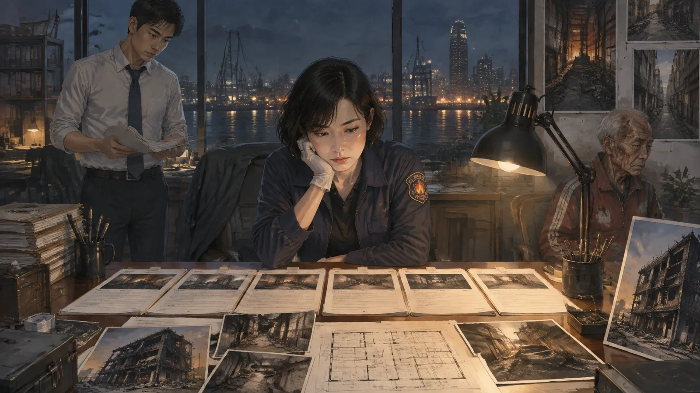
小凡：兩點十分，紅外套的人從正門離開。
阿德：一點四十八分，一樓瓦斯味。敲老賴的門沒人應。
陳太太：一點半，老賴叫她帶先生走。說「今晚不要睡太熟」。
麵攤老闆：火從二樓窗戶出來。
賴俊：他保的險，父親不知道。他欠八百萬。
林小姐：兩點零五分，老賴在後門口，拿著桶子。
六個人。六個時間點。六件事。
她把它們按時間排好。一點半，一點四十八分，兩點零五分，兩點十分，兩點十七分。她看著這條線，看了很久。
有一個洞。
阿德說他一點四十八分敲老賴的門，沒有人應。可是陳太太說一點半老賴在二樓，林小姐說兩點零五分老賴在後門口。一點三十分到兩點零五分之間，老賴在哪裡？他為什麼不應門？
還有一件事。這棟房子，一樓，二樓，三樓，六個證人講了三樓的阿德，二樓的陳太太夫婦，一樓的老賴。
一樓的印刷機房那麼大。老賴一個人住一樓後面的房間。
那印刷機房裡，是空的嗎？
第七章起火點
第四天，沈羽一個人回到現場。
她沒有帶郭子安。她想一個人看。
一樓的印刷機房。三台老印刷機，都燒黑了，機身的鐵板扭曲變形。地上是燒過的紙灰，踩上去像踩在雪上。最裡面，靠後門的那台機器旁邊，是起火點。
她在起火點蹲下來，用手電筒照地板。
地板是老式的磨石子，燒過以後裂成一片一片。她用鑷子一片一片地翻。翻到第七片的時候，她停下來。
磨石子下面，有一層東西。很薄，黑色的，燒過的布。不是紙，是布。她把它夾起來，放在證物袋裡，對著光看。棉布，燒剩的邊緣還看得出來是格子的。
她繼續翻。翻到一個燒變形的鐵杯子，一個燒剩一半的塑膠盆，一支牙刷的柄。
她站起來，看著這個角落。
印刷機的後面，靠牆的地方，有一塊大約兩公尺乘一公尺的空間。地板上的紙灰比別的地方薄，像是原本有東西蓋在上面。牆上有幾根釘子，釘子上掛著燒剩的鐵絲。
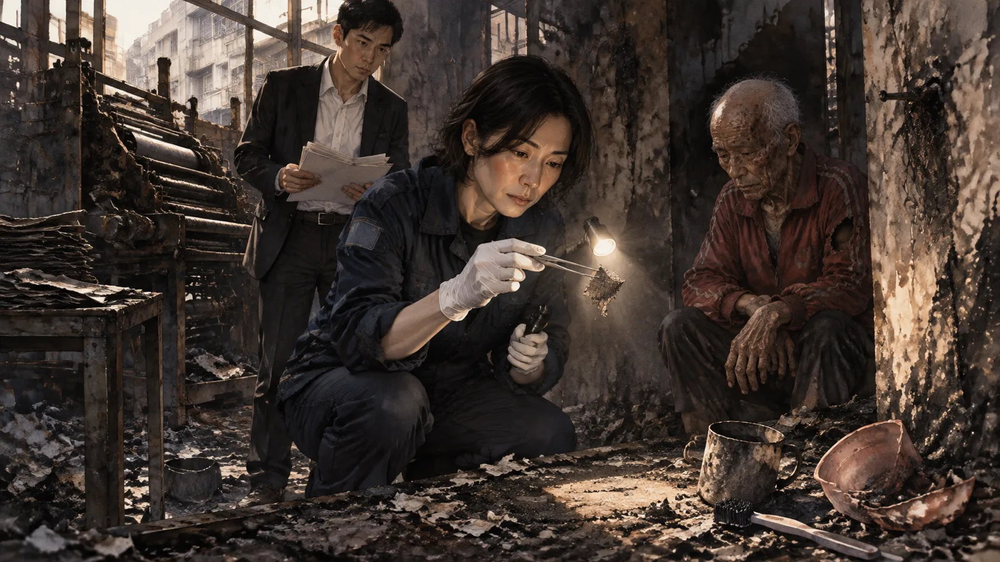
有人住在這裡。
不是老賴。老賴住一樓後面的房間，有床，有電視，有他的東西——那個房間也燒了，可是可以看出來是一個房間。這裡不一樣。這裡是印刷機後面的一個角落，用什麼東西隔起來，放一張床墊，一個盆，一支牙刷。
有人住在印刷機房裡。而六個證人，沒有一個人提到這個人。
沈羽走出房子，打電話給郭子安。
「小郭，老賴的印刷廠，還有沒有員工？」
「沒有了。早就沒有了。賴俊說二〇一五年最後一個師傅退休以後就沒有人了。」
「退休的那個師傅，叫什麼名字？」
電話那頭翻了一會兒。
「簡……簡進發。七十一歲。可是他跟這個案子沒有關係，他早就不在那裡工作了。」
「他住哪裡？」
「筆錄上沒有。要查。」
「查。」沈羽說，「還有，去問阿德和陳太太，一樓印刷機房裡，有沒有人住。」
第八章第七位證人
簡進發沒有地址。
戶籍在屏東的一個鄉下，二十年前就遷過來高雄，可是沒有登記新的地址。健保卡的紀錄，最後一次看病是二〇一七年，高雄一間小診所，地址寫的是——那棟印刷廠。
阿德說：「印刷機房？有一個阿伯，我看過幾次，都在很早的時候，他在後門口刷牙。我以為是老賴的親戚。他不講話，我跟他打招呼他只點頭。」
陳太太說：「老簡？他還在啊？我以為他早就走了。他以前是師傅，後來耳朵聾了，就沒有做了。老賴讓他住在機房裡，不收錢。老簡不會講話，從小就不會，他都用手比。」
「他不會講話？」
「聾啞。」陳太太說，「他跟老賴認識五十年了，從老賴的爸爸那時候就在了。」
沈羽站在分局的走廊上，聽郭子安講電話裡的內容。她的手很冷。
一個聾啞的老人，住在起火點旁邊。六個證人沒有一個人提到他，因為他不會講話，因為他從來不出現，因為他「早就走了」。火災之後，沒有人問過他在哪裡。
「他人呢？」沈羽問，「火災那天晚上，他在機房裡嗎？」
「消防隊沒有在一樓找到其他的人。只有老賴。」
「那他去哪裡了？」
沒有人知道。
✦
他們找了兩天。
醫院沒有。收容所沒有。警方的失蹤人口資料沒有——因為沒有人報他失蹤。沈羽走遍了那棟房子附近的每一條巷子，問每一個攤販、每一個店員，有沒有看過一個七十幾歲、不會講話的老人。
第三天，麵攤老闆說了一件事。
「妳說不會講話的那個？」他說，「火災那天早上，我看到他。天剛亮，消防隊還在灑水，他坐在防火巷那邊的牆角，全身都是黑的，穿一件紅色的外套。我以為是消防隊救出來的，沒有理他。後來我再看，人就不見了。」
「紅色的外套？」
「對，很舊的那種，運動外套。」
沈羽看著郭子安。郭子安看著她。
小凡說兩點十分，一個穿紅色外套的人從正門出來。
「那個人不是縱火犯。」沈羽說，「那個人是老簡。他從正門出來，因為後門有火。」
「那老賴——」
「老賴在後門口，拿著桶子，兩點零五分。」沈羽說，「兩點零五分到兩點十分，五分鐘。老賴進去了。老簡出來了。」
她停了一下。
「老賴不是沒有逃出去。」她說，「他是進去把老簡推出來的。」
第九章手語
他們是在一間廟找到老簡的。
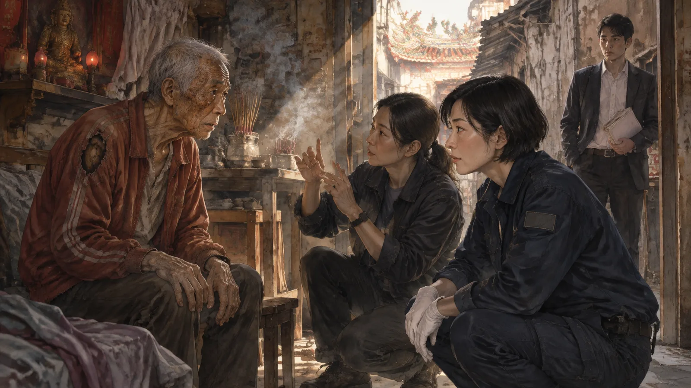
前鎮的一間小廟，主祀媽祖，後面有一個小房間，廟公讓一些沒有地方去的老人睡。老簡在那裡睡了六天。他不會講話，廟公不知道他從哪裡來，只知道他來的時候全身是灰，穿一件燒破了一個洞的紅色外套。
沈羽帶了一個手語翻譯。
老簡坐在廟後面的板凳上，七十一歲，很瘦，臉上有幾處燙傷，已經結痂了。他的手很大，手指粗，是做了一輩子印刷的手。看到沈羽和翻譯，他的眼睛先是害怕，然後是別的東西——像一個等了很久的人，終於等到了。
翻譯開始比。沈羽問，他答。翻譯說，老簡的手語很老，很多是自己編的，不好翻，可是大概是這樣：
那天晚上，他睡在機房。老賴一點多來叫他起來。老賴比手勢說：你走，今天晚上不要睡這裡，去廟裡睡。老簡不懂為什麼。他問老賴，老賴不說。老賴把一個信封塞給他，裡面有錢。老簡更不懂了。他不要錢，他把信封還給老賴。老賴生氣了，推他，叫他走。
老簡沒有走。他躺回床墊上。他想，老賴是在趕他走，可是他不知道去哪裡。他在這裡住了五十年。
然後他睡著了。
然後他聞到味道。不是瓦斯——他聞不到瓦斯，他的鼻子早就被油墨弄壞了——是煙。他睜開眼睛，看到後門那邊有火。很大的火，一下子就起來了。他從床墊上爬起來，往前門跑。跑到一半，火已經燒到印刷機了，紙堆燒起來，整個房間全是煙。他跌倒了。
然後有人抓住他。
老賴。老賴從後面抓住他的衣服，把他拖起來，推他，往前門推。老簡回頭看，老賴的臉全是黑的，眼睛很紅。老賴比了一個手勢。
翻譯停下來。
「他比的是什麼？」沈羽問。
翻譯看著老簡。老簡舉起右手，把食指彎起來——不是彎，是把第二節以上藏進拳頭裡，露出一根短了一節的食指——然後用這根手指，指了指前門，再指了指自己的胸口，再指前門。
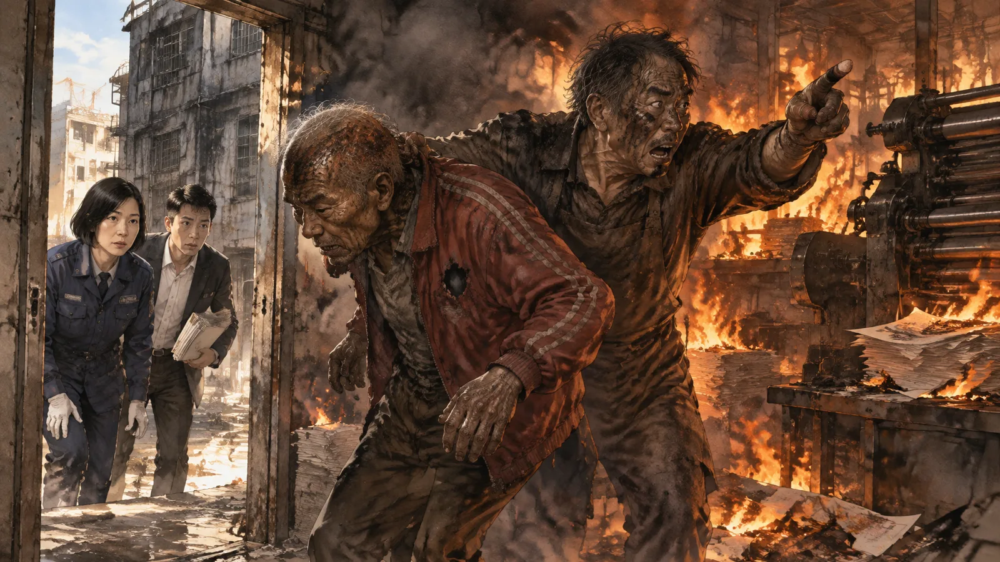
「這不是標準手語。」翻譯說，「這是他們兩個人之間的。可是我想是：你走。我在。你走。」
老簡把手放下來。他的眼睛紅了，可是沒有哭。他繼續比。
他從前門出來。他回頭，火已經把門封住了。他在馬路上站了很久，看著火。消防隊來了，他躲到防火巷的牆角，因為他怕。他不知道怕什麼，可能是怕沒有人知道他是誰。天亮以後，他走了。走到廟裡。
「他為什麼不告訴消防隊，裡面還有人？」郭子安問。
翻譯比了。老簡看著郭子安，比了很久。
「他說他有。」翻譯說，「他抓著一個消防員的手，比了很多次，指著房子裡面。消防員不懂。消防員以為他在說謝謝。」
沈羽閉上眼睛。
「還有一件事。」翻譯說，「他說，那個桶子。老賴手裡的桶子。他認得，是印刷廠的溶劑桶，洗印刷機用的。他說老賴每天都用那個桶子。他說他不知道老賴那天晚上為什麼要拿那個桶子去後門。」
「他知道那是什麼意思嗎？」
翻譯比了。老簡看著沈羽。他的眼睛很老，可是很清楚。
他點了點頭。然後他比了一個很短的手勢。
「他說，」翻譯說，「他知道。可是他不怪他。」
第十章真相
沈羽用了一個星期寫報告。
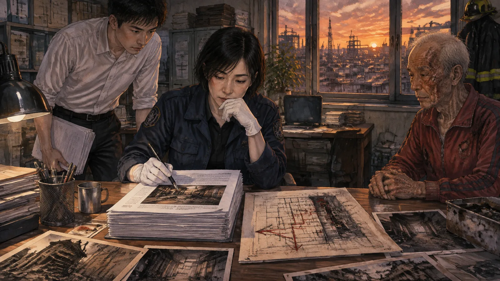
報告有四十七頁。前面三十頁是物證：起火點的位置，燃燒的方向，磨石子的裂痕，溶劑桶的殘骸，燒剩的布片，床墊的位置。她在圖上畫了火的路徑，從後門口的溶劑，燒進印刷機房，燒到紙堆，燒穿天花板，燒到二樓，燒到三樓。
後面十七頁是證詞。七個人的。
她把七個人的話按時間排好。
一點三十分，老賴敲陳太太的門，叫她帶先生走。她不能走。他說：今晚不要睡太熟。
一點三十五分左右，老賴回一樓，叫老簡走。老簡不走。老賴推他，給他錢，他不要。
一點四十八分，阿德聞到瓦斯味，敲老賴的門。老賴不應，因為他不在房間裡——他在後門口，或者在準備溶劑。瓦斯是他開的，為了讓火看起來像意外。
兩點零五分，老賴在後門口，左手拿溶劑桶。林小姐跑過去。他嚇了一跳，退了一步。
兩點零五分到兩點十分之間，老賴倒了溶劑，點了火。火從後門燒進機房，燒得很快，很集中，像有人倒了東西——沈羽第一天就看出來了。
然後老賴想起老簡還在裡面。
或者，他一直都知道老簡在裡面。他以為老簡會走。他以為錢會讓他走。他點了火，站在後門口，看著火燒進去，然後他想起那個五十年的、不會講話的、把信封還給他的老人，還躺在印刷機後面的床墊上。
他進去了。從後門，穿過火，三公尺。他找到老簡，把他拖起來，推向前門。他比了一個手勢：你走，我在，你走。
兩點十分，老簡從正門出來。穿紅色的外套。小凡看到了。
兩點十七分，麵攤老闆看到火從二樓窗戶噴出來，報案。
三點四十分，火撲滅。
天亮以後，老賴在一樓最裡面，離後門三公尺，臉朝下。
他離後門三公尺。他推完老簡以後，本來可以從後門出去。三公尺。可是那時候火已經把後門封住了，煙已經把他嗆倒了。他趴下來，臉朝下，朝著後門的方向。
沈羽在報告的最後寫了三行：
「起火原因：人為縱火。縱火者：屋主賴文龍。縱火動機：推斷為詐領保險金。」
「賴文龍於縱火後進入火場，救出一名住在起火點附近之聾啞老人簡進發，隨後於火場內死亡。」
「本案火災險理賠，依保險法應不予給付。」
第十一章報告
報告交出去的那天，賴俊來找她。
他在消防局的門口等，穿著西裝，眼睛很紅。他說他看了報告。他說他知道保險不會賠了，他說他不在乎錢。
「我只想問一件事。」他說，「我爸為什麼要這樣做？」
沈羽看著他。
「你保了險，沒有告訴他。」她說，「可是他知道。」
「他怎麼——」
「你在保險公司工作，保單會寄到被保險人的地址。他收到了。他看到三千萬，看到受益人是他自己。他知道你欠八百萬，他一直知道，你不跟他要錢，他也知道。」沈羽說，「他六十八歲，印刷廠不賺錢，房子舊了，兒子欠債。他看到一份三千萬的保單。他想了一個月。」
賴俊的眼淚流下來。
「他想把房子燒了，讓保險賠，把錢留給你。」沈羽說，「他去叫陳太太走，叫老簡走。他想燒一棟空的房子。他以為他可以。」
「可是老簡沒有走。」
「老簡沒有走。」沈羽說，「所以你爸爸進去了。」
賴俊站在消防局門口，哭得像一個小孩。沈羽站在他旁邊，沒有安慰他。她不會安慰人。她只會看火。
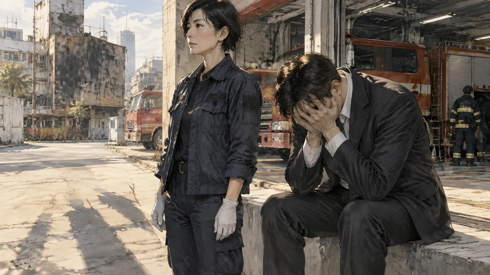
「賴先生，」她說，「你爸爸做的事是犯法的。報告上會這樣寫，因為這是事實。可是報告上還有另一件事實：他進去了。他本來可以不進去。他站在後門口，火在裡面，他可以走。他進去了。」
「這有什麼用？」賴俊說，「保險不會賠。」
「對，不會賠。」沈羽說，「這件事跟賠不賠沒有關係。這件事只是——你要記得。」
✦
老簡搬進了一間社會局安排的安養院。沈羽去看過他一次，帶了手語翻譯。他住一間四人房，靠窗，每天早上在窗邊刷牙。他比手勢說，他想念印刷機的味道。
賴俊賣了那塊地。三千萬的保險沒有賠，可是地賣了一千多萬，他還了債，剩下的，捐了一部分給老簡住的安養院。他沒有告訴任何人，是安養院的院長跟沈羽說的。
麵攤老闆還在對面擺攤。空地上長了草。
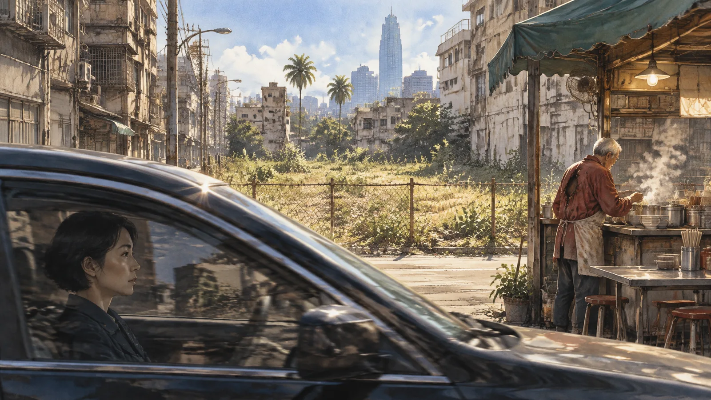
沈羽回到消防局，接下一個案子。一場倉庫的火，在岡山。她開車過去，郭子安坐在旁邊，翻著新的筆錄。
「沈姐，這個案子有四個證人，四個人說的又不一樣。」
「正常。」沈羽說。
「妳說人說謊的地方，就是他最在乎的地方。」郭子安說，「那老賴的案子裡，六個人都沒有說謊，他們只是都沒有看到全部。」
「那也是一種說謊。」沈羽說，「每個人都只講自己看到的那一段，然後以為那就是全部。你把六段連起來，會得到一個縱火犯。」
「然後第七個人來了。」
「然後第七個人來了。」沈羽說，「他不會講話。他是唯一一個在火裡面的人。」
她看著前面的路。高雄的天很亮，很乾，一點雲都沒有。
「小郭，」她說，「每一場火，都有一個不會講話的人。你要去找。」
（完）
留言板
看不懂、想補充、發現錯誤都歡迎留言；填個暱稱就能發。